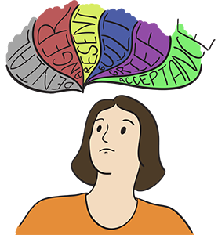

Module: Tips for families and caregivers
Laura Dyas LBSW, LPC, MA
Resources
Common caregiver feelings
Here are some feelings you may find yourself experiencing as a caregiver
Printout PDFWays to avoid anger
Some tips on avoiding anger as a caregiver
Printout PDFWays to manage your guilt
Some tips on managing guilt as a caregiver
Printout PDFTips on managing your feelings of grief
Some tips on managing grief as a caregiver
Printout PDFWays to find acceptance
Some tips on finding acceptance as a caregiver
Printout PDFLori’s Testimonial – Full Version (see video below)
This is the full version of Lori’s testimonial
Printout PDFTake care of yourself – Common feelings of a caregiver
As a person with scleroderma you may also want to read this next section. The next section briefly describes some feelings you may find yourself experiencing as a caregiver. It is not unusual to feel all of these, some of them, or none of them. Each caregiver is different. Each person you care for is different, and may need more or less care at different points in time, depending on the severity of the disease. Caregiving can be both a rewarding and a stressful responsibility. The Resources section for this module also provides tips for handling different feelings. However, if you think that any of these feelings are interfering with your life or getting in the way of caring for your loved one, it is advisable that you seek medical advice from a professional. Seeking advice is not a sign of weakness, rather a sign of strength and the desire to do the best for yourself and for your loved one.
To read the full version of Lori’s testimonial please click here.
See the resource on “Common caregiver feelings” for more detailed information.
Denial
The first emotion you may feel as a caregiver might be denial: “My loved one does not have scleroderma; there must be some mistake.” It is common to hear at some point in your life that, “you are in denial.”
Fear/Anxiety
As a caregiver, you may find yourself fearing or being anxious about many things: all the responsibilities you now are faced with, medical issues with your loved one, the unknown future, and even whether or not you can be the type of care giver you want for your loved one. It is normal to feel afraid or be anxious about being a caregiver. There are many unknowns that have suddenly been placed into your life.
Anger
Being a caregiver to your loved one can be a difficult and demanding role. You may be angry that your loved one or you can no longer do the activities you used to do.
Anger can be expressed toward a loved one, toward other family members, and toward others. Some caregivers feel trapped, isolated, and alone. Others feel empowered, entrusted and well-loved. Everyone is an individual, and your feelings will be different based on your situation.
As a caregiver, if you ever find yourself thinking about or acting out on feelings of doing harm to yourself or your loved one, it is critical that you reach out for help. Call a hot line, a local crisis center, your family physician, your local Scleroderma Foundation Chapter, or even 911. You are never alone, and you should never feel that way. Seek help before it gets to the point where your anger controls you.
See the resource on “ Ways to avoid anger.”
Resentment
We are living in a world that is filled with so many obligations: work, family, employment, hobbies, social media, and entertainment. Even hobbies can be demanding on our time. Now you are a caregiver trying to struggle with finding the time to care for a loved one, and handle all of the other roles and responsibilities in your life. What the heck is a person to do?
Resentment comes into play easily and without notice as a caregiver struggles to find the right balance with caregiving needs, professional needs, and personal needs.
The best approach to take is to understand your feelings, accept them as being normal, and try to manage them.
Guilt
Feelings of guilt can often accompany being a caregiver. One day you wake up feeling positive about your role. The next you begin to feel resentment because you can no longer spend your free time doing what you enjoy, and you are now caring for someone else’s needs versus your own. As those feelings start to linger, suddenly in comes the GUILT!
See the resource for “ Ways to manage your guilt.”
Grief
As a caregiver you can experience grief at various times. This could happen at the beginning of your new role, during your time as a caregiver to your loved one, or after a sudden change in health in your loved one. In the beginning of your role as a caregiver, you may grieve the loss of your previous life, the freedoms you have lost, or even the control over your life that you had before becoming a caregiver.
It is normal to experience grief at the loss of these elements of your life.
At times, you may question whether you do a good enough job as a caregiver. You may wonder if there is more you could do for your loved one, or if the care you provide is what your loved one truly needs and is adequate.
These feelings of grief for caregivers will come and, if appropriately dealt with, will leave just as quickly as they appeared.
See the resource for “ Tips on managing your feelings of grief.”
Acceptance
Acceptance–what an amazing word that is. But for many caregivers who have just taken on the role and all the responsibilities that come with the position, it can be like climbing up a very large mountain to get to this point. Caregivers must travel through so many other emotions that often once they come to acceptance, they are not sure they are even there!
Acceptance means you have learned to weather the other emotions, you are finding balance, and you are ready to tackle the obstacles ahead of you. It does not mean you like all aspects of being a caretaker; it just means you are doing your very best to cope. Be proud of yourself, pat yourself on the back, look yourself in the mirror every morning and remind yourself just how incredible you are. Someone needs to, and why shouldn’t it be you?
See the resource on “ Ways to find acceptance.”